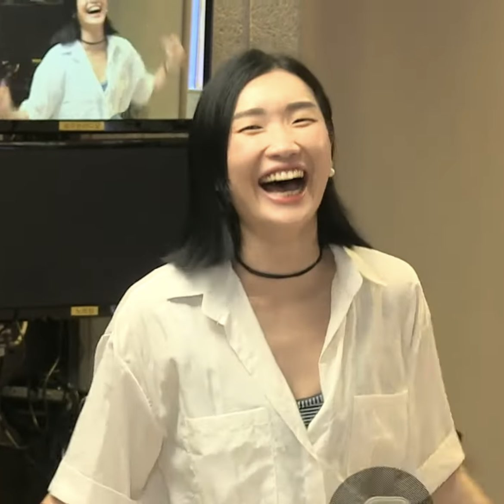

- HTML
- CSS
- JavaScript
- 21.11.23 1~13강 들음. 난 짱이야. 이해 너무 잘해.
HTML
I want to be a good webdesigner in the future. Hopefully within 5 years, but it's okay not to be too soon. Whatever it may be, I wanna do what I feel proud of. Now I have learned deeply that taste is the THING, I know that it is the fastest to explore and get to know even if it is a little slow. I really want to live an exciting life in this time. I am the one who lives my life. Let's go!
I love 'Street Woman Fighter'!
Especially, Prowdmon! Monika, Lip J and Kayday!
